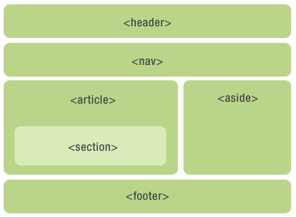
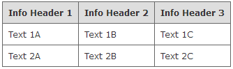
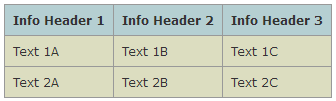
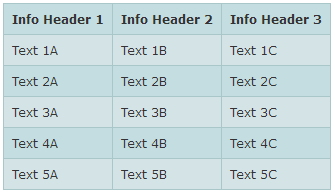
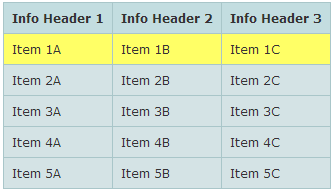

CONTENT OUTLINE
总结了一下关于HTML标签的内容
–
HTML5废弃标签–
HTML5新增语义化标签–
<a>标签–
<table>标签–
HTML语义化
一、Html5废弃标签
第一类：表现性元素
- basefont
- big
- center
- font
- s
- strike
- tt
- u
建议用语义正确的元素代替他们，并使用CSS来确保渲染后的效果
第二类：框架类元素
因框架有很多可用性及可访问性问题，HTML5规范将以下元素移除。
- frame
- frameset
- noframes
但html5支持iframe。
第三类：属性类
很多表现性的属性也被新规范移除，如下：
- align
- body标签上的link、vlink、alink、text属性
- bgcolor
- height和width
- iframe元素上的scrolling属性
- valign
- hspace和vspace
- table标签上的cellpadding、cellspacing和border属性
- header标签上的profile属性
- 链接标签a上的target属性
- img和iframe元素的longdesc属性
第四类：其他
- abbr取代acronym（用于表示缩写）
- object取代了applet
- ul取代了dir
另附上直观的：html5元素周期表
二、HTML5新增的语义化标签
主要有：<article>、<section>、<nav>、<aside>、<header>、<footer>、<time>等等…

优点：
- 为了在没有CSS的情况下，页面也能呈现出很好地内容结构、代码结构
- 比
<div>标签有更加丰富的含义，方便开发与维护 - 方便搜索引擎能识别页面结构，有利于
SEO - 方便其他设备解析（如移动设备、盲人阅读器等）
- 有利于合作，遵守W3C标准
注意：
- 尽可能少的使用无语义的标签div和span
- 在语义不明显时，既可以使用div或者p时，尽量用p，因为p在默认情况下有上下间距，对兼容特殊终端有利
- 不要使用纯样式标签，如：b、font、u等，改用css设置
- 需要强调的文本，可以包含在strong或者em标签中
- 使用表格时，标题要用caption，表头用thead，主体部分用tbody包围，尾部用tfoot包围。表头和一般单元格要区分开，表头用th，单元格用td
- 表单域要用fieldset标签包起来，并用legend标签说明表单的用途
- 每个input标签对应的说明文本都需要使用label标签，并且通过为input设置id属性
补充：
1. header与hgroup
放在页面或布局的顶部，一般放置导航栏或标题，如：
1 | <header> |
一个文档中可以包含一对或者一对以上的<header>标签。
标签的位置是次要的，不一定非要显示在页面的上方，我们可以为任何需要的区块标签添加<header>元素，例如下面将要讲解的<article>、<section>等标签。
1 | <hgroup> |
- 如果有连续多个h1-h6标签就用hgroup
- 如果有连续多个标题和其他文章数据，h1-h6标签就用hgroup包住，和其他文章元数据一起放入header标签
2. nav
表示页面的导航，也可以在<header>标签中使用，还可以显示在侧边栏中。一个页面之中可以有多个<nav>标签。
为了方便搜索引擎解析，最好是将主要的链接放在nav中。
1 | <header> |
3. aside
所包含的内容不是页面的主要内容、具有独立性，是对页面的补充。<aside>一般使用在页面、文章的侧边栏、广告、友情链接等区域。
4. footer
一般被放置在页面或者页面中某个区块的底部，包含版权信息、联系方式等信息。一个页面也可以有多个footer
1 | <footer> |
5. article
<article>元素应该使用在相对比较独立、完整的的内容区块，所以我们可以在一篇博客、一个论坛帖子、一篇新闻报道或者一个用户评论中使用<article>元素。article可以互相嵌套。
1 | <article> |
6. section
一组或者一节内容。
<div>、<section>、<article>三者的比较：
<div>：应用广泛，任意一个区域<section>：包含的内容是一个明确的主题，通常有标题区域<article>：如果我们的页面中需要一个单独的模块来实现一个单独的功能，就用<article>，其他的时候都用<section>
7. time
可以带格式的时间标签
1 | <time datetime="2017-07-03"> |
8. mark
高亮
9. address
address代表区块容器，必须是作为联系信息出现，邮编地址、邮件地址等等,一般出现在footer。
三、<a>标签
1 | <a href="javascript:void(0)" click="function(){}" />= |
1. a 标签样式
一组专门的预定义的类称为伪类用于处理超链接的状态，超链接的文字的状态可以通过伪类选择器+样式类进行控制 <a class="mycls" ></a>
所有状态下的链接
.mycls{color:red}a:link未访问的连接.mycls a:link{color:blue}a:visited已访问的链接.mycls a:visited{color: visited}a:active激活时（链接获取焦点）链接的颜色.mycls a:active{color:blue}
一般情况下 a:hiver和a:visited的颜色是一种的，这4个状态的过程是： a:link ->a:hover->a:active->a:visited
另外，a：active不能设置有无下划线（总是有的）
<style>
a {font-size:16px}
a:link {color: blue; text-decoration:none;} //未访问：蓝色、无下划线
a:active:{color: red; } //激活：红色
a:visited {color:purple;text-decoration:none;} //已访问：purple、无下划线
a:hover {color: red; text-decoration:underline;} //鼠标移近：红色、下划线
</style>2. target的属性
<a>标签的target属性规定在何处打开链接文档
如下面这行表示在新的窗口中打开文档<a href="http://www.baidu.com" target="_blank"> visit w3school </a>
可选值：_blank、_parent、_self、_top、*framename*
_blank 浏览器总在一个新打开，未命名的窗口中载入目标文档
_self 这个目标的值对所有没有指定目标的<a>标签是默认目标。它使得目标文档载入并显示在相同的框架或者窗口中作为源文档。这个目标是多余的且不必要的，除非和文档标题<base>标签中的target属性一起使用
_parent 在父框架集中打开被链接的文档
_top 在整个窗口打开被链接文档
framename 在指定的框架中打开被链接文档
3. name属性
name属性规定锚(anchor)的名称，可以使用name属性创建html页面中的书签，书签不会以任何独特方式显示，它对读者可以是不可见的。
当使用命名锚(named anchors)时，我们可以创建直接跳转至该命名锚(比如页面中某个小节)的链接,这样使用者就无需不停滚动页面来寻找需要的信息了。
命名语法<a name="label">锚(显示在页面上的文本)</a>
- 锚名称可以是任何名字
- 可以使用id属性来代替name属性，命名锚同样有效
例子
1)我们在html文档中对锚进行命名(创建一个书签)<a name="tips">基本的注意事项 - 有用的提示</a>
2）在同一个文档中创建指向该锚的链接<a href="tips">有用的提示</a>
3)也可以在其他页面中创建指向，该锚的链接<a href="http://mypro#trip">有用的提示<a>
4. 标签事件
将<a>标签的href属性值设置为”#”，并设置onclick属性。
在这种处理方式下，用户可以很明显地看出哪些文字是超链接。
在单击该超链接时，也可以执行onclick属性值中的JavaScript语句，并且不会跳转网页。
但是，由于href的属性值为”#”，浏览器会自动跳 转到当前网页的顶部。
如果当前网页内容比较多，浏览器窗口出现下拉滚动条时，可以很明显地看到跳转，而这种跳转往往不是网页设计者的本意。
在没有为<a>标签设置onclick属性时，如果单击了该超链接，浏览器会加载href属性中的URL。
如果href属性值并不是一 个URL，而是一个JavaScript语句的话，那么浏览器就会执行该语句。
因此，可以直接将JavaScript语句写在<a>标签的 href属性值中，让href属性代替onclick属性。
在这种处理方式下，既可以响应click事件，又可以不让网页跳转。
注意：在 a 标签的属性值中添加JavaScript语句之前，必须要先使用”javascript:”语句来声明href属性值中的语句为javaScript语句，否则浏览器就会将href属性值中的JavaScript语句当成URL进行加载。<a href="javascript:showFlag()">ssgao</a> 执行showFlag()方法<a href="" onclick="showFlag();">ssgao</a> 执行showFlag()方法，并会跳转到href指向的页面—->当href=""刷新当前页面<a href="">ssgao</a> 刷新当前页面<a href="#" onclick="showFlag();">ssgao</a> 执行showFlag()方法，并会跳转到页面顶部<a href="#" onclick="javascript:方法;return false;">提交</a><a href="javascript:void(0)" onclick="javascript:方法;return false;">提交</a>
javascript:void(0)就不会向上跳了
还有一个方法是 #thisa href="#this" onclick="javascript:方法"
5. 回到顶部或底部
使用JS
1 | $("#带有滚动条的元素").animate({scrollTop:0},'fase'); //带有动画 |
使用a标签的name属性(锚记)
1 | <a name="top">top</a> |
| 属性 | 值 | 描述 |
|---|---|---|
| charset | char_encoding | HTML5 中不支持。规定被链接文档的字符集。 |
| coords | coordinates | HTML5 中不支持。规定链接的坐标。 |
| download | filename | 规定被下载的超链接目标。 |
| href | URL | 规定链接指向的页面的 URL。 |
| hreflang | language_code | 规定被链接文档的语言。 |
| media | media_query | 规定被链接文档是为何种媒介/设备优化的。 |
| name | section_name | HTML5 中不支持。规定锚的名称。 |
| rel | text | 规定当前文档与被链接文档之间的关系。 |
| rev | text | HTML5 中不支持。规定被链接文档与当前文档之间的关系。 |
| shape | defaultrectcirclepoly | HTML5 中不支持。规定链接的形状。 |
| target | _blank_parent_self_topframename | 规定在何处打开链接文档。 |
| type | MIME type | 规定被链接文档的的 MIME 类型。 |
四、HTML<table>标签功能
绘制表格使用；如果是做后台管理的用户列表等类似 Excel 功能，这个标签是最佳的选择
1. table基础
<table>标签定义 HTML 表格- 一个 HTML 表格包括
<table>元素，一个或多个<tr>、<th>以及<td>元素。 <tr>元素定义表格行<th>元素定义表头<td>元素定义表格单元
更复杂的 HTML 表格也可能包括
<caption><col><colgroup><thead><tfoot><tbody>
HTML <table>标签用法
一个简单的 HTML 表格，包含两列两行：
1 | <table border="1"> |
注意事项
虽然现在 DIV+CSS 布局非常流行，是取代 table 布局的好选择；
但是遇到 table 相关的东西，还是使用table标签更佳，请根据实际场景进行选择
HTML4 与 HTML5 之间的差异
在 HTML5 中，仅支持 “border” 属性，并且只允许使用值 “1” 或 “”。
2. 表格样式案例
2.1 单像素CSS表格

1 | <!-- CSS goes in the document HEAD or added to your external stylesheet --> |
2.2 带背景图的CSS样式表格

1 | <!-- CSS goes in the document HEAD or added to your external stylesheet --> |
2.3 自动换整行颜色的CSS样式表格（需要用到JS）

这个CSS表格会自动切换每一行的颜色，这种呈现方式，在我们编辑一个数据庞大的表格时，非常好用
1 | <!-- Javascript goes in the document HEAD --> |
2.4 鼠标悬停高亮的CSS样式表格 (需要JS)

纯CSS显示表格高亮在IE中显示有问题，所以这边使用了JS来做高亮。
注意：不要定义格子的背景色。
1 | <!-- CSS goes in the document HEAD or added to your external stylesheet --> |
五、HTML 语义化
1. 什么是HTML语义化标签
语义化的标签，说明让标签有自己的含义。
<p>一行文字</p>
<span>一行文字</span>
如上代码，p 标签与 span 标签都区别之一就是，p 标签的含义是：段落。而 span 标签责没有独特的含义。
2. 语义化标签的特点
代码结构清晰，方便阅读，有利于团队合作开发。
方便其他设备解析（如屏幕阅读器、盲人阅读器、移动设备）以语义的方式来渲染网页。
有利于搜索引擎优化（SEO）。
便于团队开发和维护，语义化更具可读性，遵循W3C标准的团队都遵循这个标准，可以减少差异化。
3. 常见的语义化标签
因此我们在写页面结构时，应尽量使用有 语义的HTML 标签
1 | <title>：页面主体内容。 |
参考半叶寒羽 » HTML5废弃的标签及属性